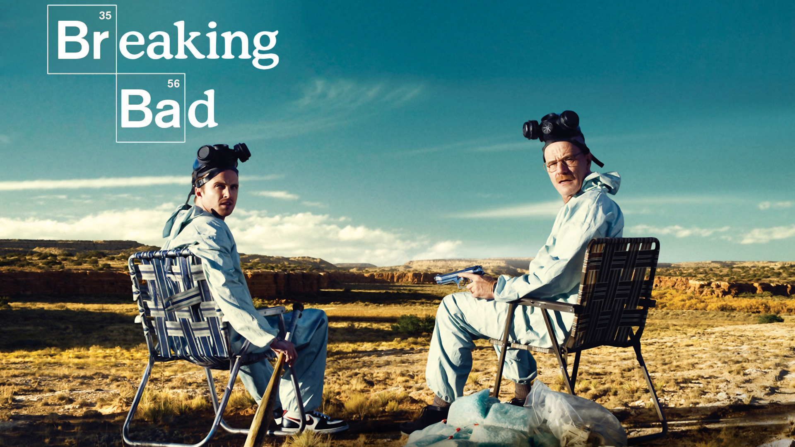
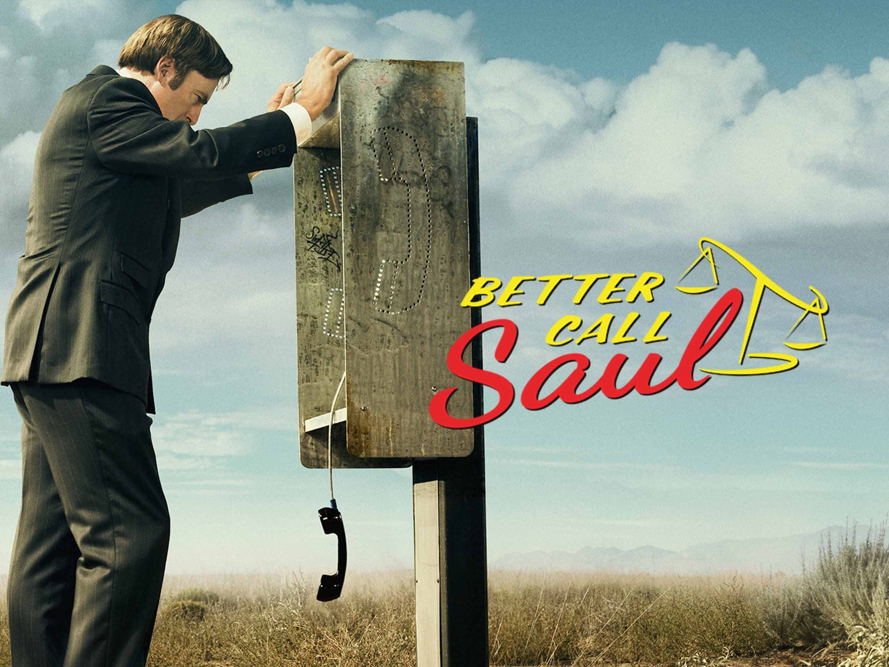

New Mexico. Albuquerque. 2002 - forevermore.
 Breaking Bad is an American crime drama television series created and produced by Vince Gilligan. Set and filmed in Albuquerque, New Mexico, the series follows Walter White (Bryan Cranston), an underpaid, overqualified, and dispirited high-school chemistry teacher who is struggling with a recent diagnosis of stage-three lung cancer. White turns to a life of crime and partners with a former student, Jesse Pinkman (Aaron Paul), to produce and distribute crystal meth to secure his family's financial future before he dies, while navigating the dangers of the criminal underworld. The show aired on AMC from January 20, 2008, to September 29, 2013, consisting of five seasons for a total of 62 episodes.
Set in Albuquerque, New Mexico, between 2008 and 2010,[11] Breaking Bad follows Walter White, a modest high school chemistry teacher who transforms into a ruthless kingpin in the local methamphetamine drug trade, driven to financially provide for his family after being diagnosed with inoperable lung cancer. Initially making only small batches of meth with his former student Jesse Pinkman in a rolling meth lab, Walter and Jesse eventually expand to make larger batches of special blue meth that is incredibly pure and creates high demand. Walter takes on the name "Heisenberg" to mask his identity. Because of his drug-related activities, Walter eventually finds himself at odds with his family, the Drug Enforcement Administration (DEA) through his brother-in-law Hank Schrader, the local gangs, and the Mexican drug cartels (including their regional distributors), putting him and his family's lives at risk.
Better Call Saul is an American crime and legal drama television series created by Vince Gilligan and Peter Gould. Part of the Breaking Bad franchise, it is a spin-off, prequel and sequel to Gilligan's previous series, Breaking Bad. Set primarily in the early-mid 2000s in Albuquerque, New Mexico, the series develops Jimmy McGill (Bob Odenkirk), an earnest lawyer and former con artist, into an egocentric criminal defense attorney known as Saul Goodman. Also shown is the moral decline of former police officer Mike Ehrmantraut (Jonathan Banks), who becomes a violent fixer for drug traffickers to support his granddaughter and widowed daughter-in-law. The show premiered on AMC on February 8, 2015, and concluded on August 15, 2022, after six seasons consisting of 63 episodes.
Better Call Saul follows the transformation of Jimmy McGill (Bob Odenkirk), a former con artist who is trying to become a respectable lawyer, into the personality of the flamboyant criminal lawyer Saul Goodman (a play on the phrase "[it]'s all good, man!"), over the six-year period prior to the events of Breaking Bad, spanning from approximately 2002 to 2008.
Starring:
Executive producers: Vince Gilligan and Peter Gould
This page is made by Anastasia Martynenko